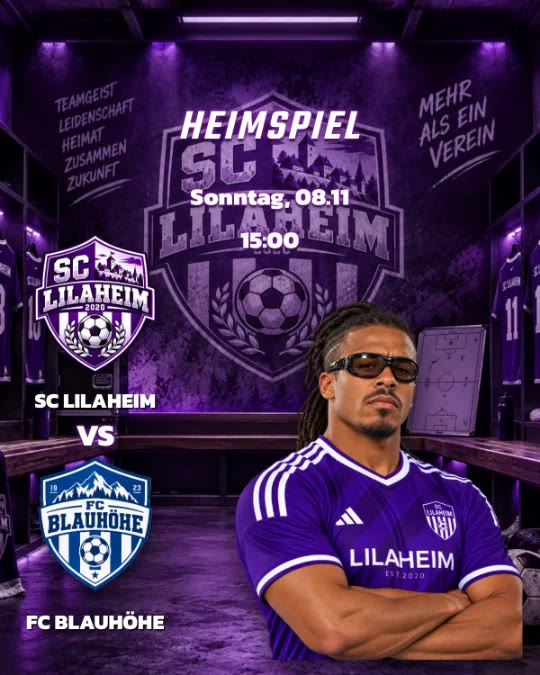
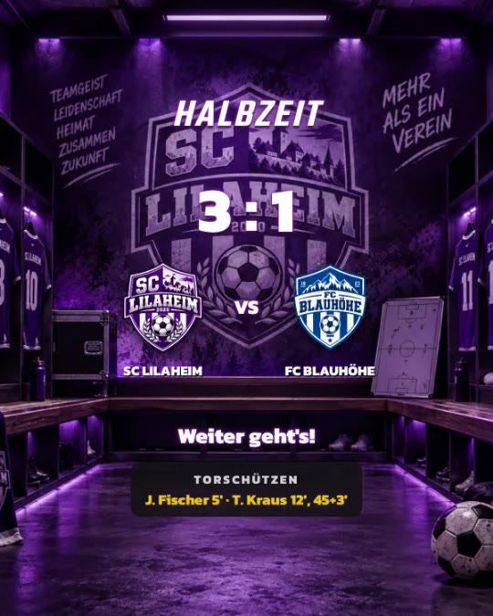
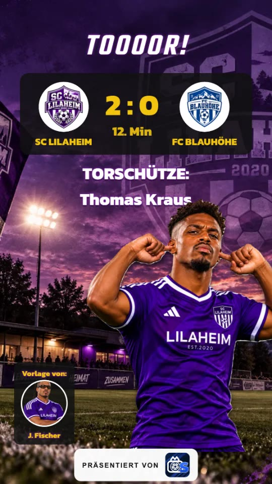
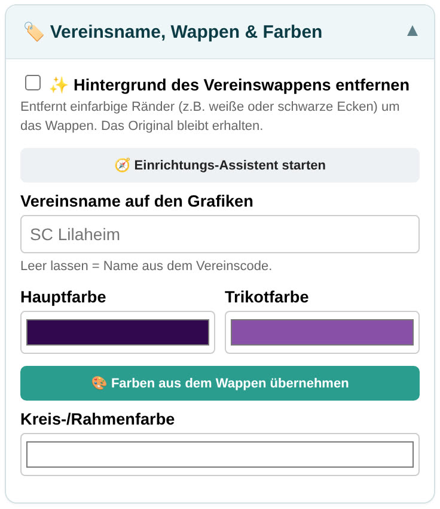
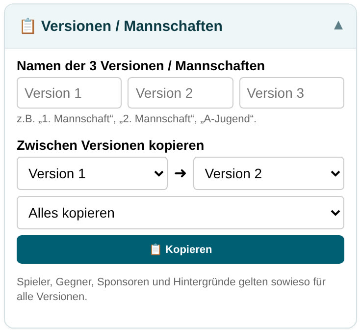
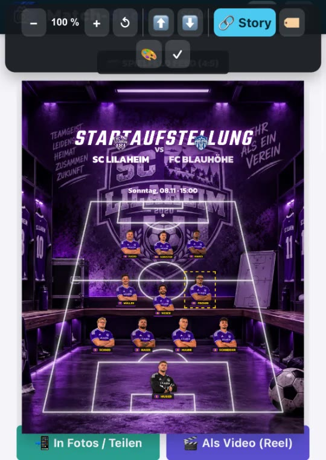

Match-Shot
Match-ShotHandbuch & FAQ
für deinen Verein
Einrichten, Grafiken erstellen, teilen – alle Funktionen Schritt für Schritt, mit Tipps aus der Praxis und Antworten auf die häufigsten Fragen.



Inhalt
- 1Schnellstart in 5 Schritten
- 2Einrichtung – so legst du alles einmal richtig an
- 3Bedienung – Vorschau, Verschieben, Aussehen, Teilen
- 4Die 14 Vorlagen im Überblick
- 5Ein typischer Spieltag mit Match-Shot
- 6Häufige Fragen (FAQ)
- 7Basis oder Advanced – was ist enthalten?
So liest du dieses HandbuchBegriffe in grauen Kästchen sind Knöpfe oder Bereiche, genau so, wie sie in der App heißen. Funktionen mit ADVANCED gibt es nur im Advanced-Paket.
Die wichtigste Regel zuerstSpieler, Gegner, Sponsoren und Hintergründe legst du nur einmal an. Danach stehen sie in allen Vorlagen per Tipp zur Auswahl – die meisten Grafiken sind dann in einer Minute fertig.
Wo finde ich was?
| Bereich | Was du dort machst |
|---|
| 🏠 Start | Vorlage auswählen, Versionen (Mannschaften) wechseln, Einstellungen: Vereinsname, Wappen, Farben, Hashtags, Backup |
| 🗃️ Daten | Spieler & Trainer, Gegner, Sponsoren, eigene Schriften und eigene Hintergründe anlegen |
| Reiter der Vorlagen | Ankündigung Aufstellung Tor Ergebnis … – unten in der Leiste wischen, um alle zu sehen |
| ✏️ Bearbeiten / 👁️ Vorschau ansehen | Am Handy wechselst du mit dem großen Knopf unten zwischen Eingabe und fertiger Grafik |
2 · Einrichtung
Einmal sorgfältig einrichten spart dir später jede Woche Zeit. Plane dafür etwa 30–60 Minuten ein.
2.1 Einstellungen (Start)
🏷️ Vereinsname, Wappen & Farben
- Vereinsname auf den Grafiken: leer lassen = Name aus dem Vereinscode. Hier kannst du z. B. „SC Lilaheim“ statt „Sportclub Lilaheim e. V.“ eintragen.
- Hintergrund des Vereinswappens entfernen: entfernt weiße oder schwarze Ecken um das Wappen.
- Hauptfarbe, Trikotfarbe, Kreis-/Rahmenfarbe: am einfachsten mit 🎨 Farben aus dem Wappen übernehmen. Die Trikotfarbe ist die Akzentfarbe (Linien, Rückennummern, Hervorhebungen).
📱 Beiträge & Instagram
- Hashtags: werden automatisch unter jeden Beitragstext gesetzt, z. B. #sclilaheim #kreisliga.
- Format der Beiträge: 4:5 (Hochformat, empfohlen – Instagram zeigt Beiträge im Profil hochkant) oder 1:1.
- Instagram-Hilfslinien in Storys: zeigt, wo Profilbild und Antwortfeld später etwas verdecken. Die Linien sind nicht im fertigen Bild.

Vereinsname, Wappen & Farben
📋 Versionen / Mannschaften
Match-Shot hat 3 getrennte Versionen – ideal für 1. Mannschaft, 2. Mannschaft und Jugend. Jede Version hat eigene Aufstellung, eigene Texte und eigene Spiele. Gib ihnen hier Namen; diese erscheinen z. B. in der Wochenend-Grafik.
Zwischen Versionen kopieren: überträgt Inhalte oder das Design von einer Version in eine andere. Spieler, Gegner, Sponsoren und Hintergründe gelten sowieso für alle Versionen.
👁️ Ansicht anpassen
Blende Reiter oder Bereiche aus, die du nie brauchst. Der Einfach-Modus zeigt nur das Nötigste – gut für Helfer, die nur schnell eine Grafik machen sollen.

Die 3 Versionen benennen
3 · Bedienung
Jede Vorlage funktioniert gleich: oben eintragen, in der Vorschau anpassen, teilen. Jede Grafik entsteht automatisch als Beitrag und als Story.
3.1 In der Vorschau verschieben & größer ziehen
Tippe in der Vorschau auf ein Element (Text, Logo, Spieler). Es wird gestrichelt markiert und oben erscheint die Werkzeugleiste:
| Knopf | Funktion |
|---|
| − / + | Element kleiner / größer (Prozent-Anzeige dazwischen) |
| ↺ | Größe & Position dieses Elements zurücksetzen |
| ⬆ / ⬇ | Nach vorne holen / nach hinten schieben (wenn Elemente sich überlappen) |
| 🔗 Story / Beitrag | Beitrag & Story gemeinsam anpassen: das Gegenstück im anderen Format bewegt sich mit |
| 🏷️ | Namen dieses Spielers ein- oder ausblenden |
| 🎨 | „Welche Farbe/Schrift steuert das?“ – springt direkt zur passenden Einstellung |
| ✏️ Bearbeiten | Nur bei Texten: Text, Schrift, Farbe, Stärke, Effekt, Kasten und Ausrichtung nur für dieses Textfeld (siehe unten) |
| 🔍 Ausschnitt | Nur bei Spielerfotos: Das ganze Foto erscheint mit einem Rahmen – Rahmen verschieben und an den Ecken größer/kleiner ziehen; der helle Bereich ist im Bild zu sehen. Oder „🖼️ Ganzes Bild zeigen“ (nichts abschneiden). Gilt für dieses Foto des Spielers in allen Vorlagen |
| 🔓 / 🔒 | Element sperren – es lässt sich dann nicht mehr versehentlich verschieben (antippen und bearbeiten geht weiter) |
| ⋯ | Mehr: Element drehen (in 5°-Schritten oder als Gradzahl) und Größe/Position als genaue Zahl eingeben |
| ✓ | Fertig |
Verschieben geht mit dem Finger; zum Größer-/Kleinerziehen auch mit zwei Fingern. Beim Ziehen rastet das Element an der Mitte, an den Rändern und an anderen Elementen ein – eine pinke Hilfslinie zeigt das an (am PC mit gedrückter Alt-Taste frei platzieren). Bei der Eckball-Taktik gibt es zusätzlich ein Steuerkreuz für millimetergenaues Verschieben.
Nichts mehr versehentlich verschiebenÜber jeder Vorschau gibt es den Knopf 🔓 Verschieben erlaubt. Ein Tipp sperrt das Verschieben für alle Elemente – ideal, wenn das Design fertig ist und du nur noch Inhalte änderst. Einzelne Elemente sperrst du in der Werkzeugleiste mit 🔒.
Etwas verrutscht oder verschwunden?Unten in jedem Reiter: 🔄 Zurücksetzen (Positionen & Design) … – dort wählst du, was zurückgesetzt werden soll.

Element markiert – oben die Werkzeugleiste
4 · Die 14 Vorlagen
Bei jeder Vorlage: links ein Beispiel, rechts der Bearbeiten-Bereich. Alle Vorlagen gibt es als Beitrag und als Story.
📣 Ankündigung
- 📅 Nächsten Termin aus Kalender übernehmen – oder Spielort, Gegner, Datum und Uhrzeit wählen.
- Der Titel passt sich automatisch an: „HEIMSPIEL“ oder „AUSWÄRTSSPIEL“ (oder eigener Text).
- Unter „Aussehen anpassen“ ein 🧩 Layout wählen (z. B. „Spieler“), einen Spieler ins Bild holen, Wappen-Anordnung und „VS“ einstellen.
Tipp: Die Ankündigung ist die Basis – Tor, Ergebnis und Wochenende übernehmen Gegner und Spielort von hier.
📋 Aufstellung
- Spielform (11er, 9er, 7er) und Formation wählen.
- Startelf antippen, Kapitän, Bank und Trainer eintragen; optional Rückennummern.
- „Gegner & Datum anzeigen“ für den Profi-Look. Unter ⚽ Spielfeld & Spieler-Look: Feld schräg wie im TV, freigestellte Spieler.
Tipp: Spieler in der Vorschau antippen und verschieben oder größer ziehen (z. B. den Kapitän). Als Liste gibt es die Aufstellung ebenfalls.
5 · Ein typischer Spieltag
So spielen die Vorlagen zusammen – jede baut auf der vorherigen auf:
Saisonstart
Spielplan einfügen, Mannschaftsfoto, Spielervorstellung für den ganzen Kader, Sponsoren-Dank.
Montag
„Nächste Spiele“ als Beitrag (Kalender). Geburtstage der Woche.
Donnerstag
Ankündigung mit „Nächsten Termin übernehmen“ – in jeder Version (Mannschaft). Der Trainer schickt den Kader mit Treffpunkt in die WhatsApp-Gruppe.
Freitag
Wochenende-Vorschau: alle Spiele aller Mannschaften auf einer Grafik, mit einem Tipp aus den Ankündigungen.
Spieltag
1 Stunde vorher: Aufstellung (gern als Reel). Während des Spiels: Tor-Updates als Story, zur Pause die Halbzeit.
Abpfiff
Ergebnis – Torschützen sind dank „Tor beim Ergebnis eintragen“ schon drin. Dazu Player of the Match.
Sonntagabend
Wochenende → Ergebnisse umschalten und alle Spielstände eintragen.
Zeitspar-TippNutze 💬 Text für den Beitrag bei jeder Grafik – der Instagram-Text mit Gegner, Datum, Torschützen und euren Hashtags ist schon fertig.
Mehrere Helfer im Verein?Einer richtet alles ein und schickt das Backup an die anderen (📤 Backup teilen). Die importieren es mit „Zusammenführen“. Neue Spieler später einfach wieder per Backup verteilen.
6 · Häufige Fragen
Wo werden meine Daten gespeichert?
Nur auf deinem Gerät, im Speicher des Browsers bzw. der App. Es gibt kein Konto und keine Cloud. Auch das Freistellen per KI passiert direkt auf dem Gerät. Deshalb: regelmäßig ein Backup machen.
Ich habe ein neues Handy – wie nehme ich alles mit?
Auf dem alten Gerät 📤 Backup teilen (z. B. per Mail an dich), auf dem neuen Gerät mit dem Vereinscode anmelden und unter 💾 Backup & Export → JSON Datei importieren einlesen.
Können mehrere Personen im Verein Match-Shot nutzen?
Ja – der Vereinscode gilt für beliebig viele Geräte. Die Daten teilt ihr per Backup (siehe oben, beim Import „Zusammenführen“ wählen).
Auf dem iPhone sind meine Daten weg – warum?
Safari löscht Daten von Webseiten, die 7 Tage nicht genutzt wurden. Lege Match-Shot deshalb auf den Home-Bildschirm (Kapitel 1) und spiele dein letztes Backup ein.
Funktioniert Match-Shot ohne Internet?
Ja. Nach dem ersten Öffnen läuft die App auch offline, z. B. am Sportplatz ohne Empfang. Ab und zu wird mit Internet geprüft, ob euer Vereinscode noch gültig ist, und Updates werden geladen.
Wie teile ich eine Grafik auf Instagram?
📲 In Fotos / Teilen → „Bild sichern“ (landet in deinen Fotos) oder direkt Instagram wählen. Danach in Instagram einen Beitrag bzw. eine Story mit dem Bild erstellen und den 💬 Text für den Beitrag einfügen.
Ein Text oder Logo ist verrutscht – wie bekomme ich es zurück?
Element antippen und in der Werkzeugleiste ↺ wählen. Für den ganzen Reiter: 🔄 Zurücksetzen (Positionen & Design) … unten im Bearbeiten-Bereich – mit einem gewählten Layout führt das zum Layout zurück.
Wie bekomme ich das alte Spiel weg?
In Ankündigung, Tor, Ergebnis und den meisten anderen Vorlagen gibt es ganz oben im Inhalts-Bereich 🧹 Inhalte leeren. Das setzt nur die Inhalte zurück (Gegner, Spielstand, Torschützen, Texte …) – Design, Positionen und Einstellungen bleiben. Bei Aufstellung und Kader heißen die Knöpfe „Aufstellung leeren“ bzw. „Kader leeren“. Danach z. B. mit „Nächsten Termin aus Kalender übernehmen“ das neue Spiel holen.
Im Rahmen ist der falsche Teil des Fotos zu sehen (z. B. der Kopf abgeschnitten).
Foto im Bild antippen → oben 🔍 Ausschnitt. Du siehst das ganze Foto mit einem Rahmen: Rahmen mit dem Finger verschieben, an den Ecken größer oder kleiner ziehen (oder ins Foto tippen, um ihn dorthin zu setzen). Der helle Bereich ist genau das, was im Bild erscheint. Soll gar nichts abgeschnitten werden: 🖼️ Ganzes Bild zeigen. Der Ausschnitt wird beim Spieler gespeichert und gilt in allen Vorlagen – passend zur Form des jeweiligen Rahmens. ↩️ Standard stellt alles zurück.
Beim Scrollen verschiebe ich ständig aus Versehen etwas.
Tippe über der Vorschau auf 🔓 Verschieben erlaubt – dann ist das Verschieben gesperrt und du kannst die Vorschau normal scrollen. Antippen und „✏️ Bearbeiten“ funktionieren weiter. Einzelne Elemente sperrst du mit 🔒 in der Werkzeugleiste.
Meine Grafik sieht plötzlich ganz anders aus.
Wahrscheinlich ist ein Design-Stil, ein Layout oder ein Extra aktiv. Unter ✨ Extras zeigt „· aktiv“, wie viele Extras eingeschaltet sind – ↩️ Alle Extras zurücksetzen schaltet sie ab. Das Layout stellst du unter 🧩 Layout wieder auf „Klassisch“. Und jede Änderung lässt sich oben mit ↩️ rückgängig machen.
Wie ändere ich den Namen eines Spielers oder lösche ihn?
Unter 🗃️ Daten → 👤 Spieler & Trainer beim Spieler bearbeiten oder löschen. Viele auf einmal: ✏️ Alle Spieler auf einmal bearbeiten. Umbenennungen werden in allen Aufstellungen übernommen.
Das Freistellen per KI dauert lange.
Beim ersten Mal lädt die App die KI einmalig herunter – am besten im WLAN. Danach geht es schneller. Bei vielen Spielern einfach ✂️ Hintergrund bei allen Spielern entfernen laufen lassen.
Welche Größe sollten eigene Hintergründe haben?
1080 × 1350 px für Beiträge, 1080 × 1920 px für Storys. Mit dem Format „Story & Beitrag“ reicht ein Bild, Match-Shot schneidet passend zu.
Warum steht auf meinen Bildern ein Wasserzeichen?
Das passiert nur im Demo-Modus („Kostenlos testen“). Mit eurem Vereinscode gibt es kein Wasserzeichen. Code eingeben: 🏠 Start → Code ändern.
Ich sehe eine neue Funktion aus diesem Handbuch nicht.
Die App aktualisiert sich selbst. Schließe sie einmal ganz und öffne sie neu (mit Internet). Die aktuelle Versionsnummer steht ganz unten auf der Startseite. Prüfe außerdem, ob die Funktion zum Advanced-Paket gehört und ob sie unter 👁️ Ansicht anpassen ausgeblendet ist.
Dürfen wir Fotos von Kindern und Jugendlichen posten?
Nur mit Einwilligung der Eltern bzw. der Spieler. Match-Shot hilft dabei: 🛡️ Einwilligungen verwalten (DSGVO) unter 👤 Spieler & Trainer – beim Teilen warnt die App, wenn jemand ohne Einwilligung im Bild ist.
Dürfen wir eigene Schriften und Musik verwenden?
Schriften: nur mit passender Lizenz (z. B. gekaufte oder kostenlose Schriften mit freier Lizenz). Musik: Die Videos von Match-Shot haben keinen Ton. Füge Musik in Instagram hinzu – für Vereins- und Firmenkonten am besten aus „Lizenzfrei“.
Mein Vereinscode funktioniert nicht oder ist abgelaufen.
Prüfe die Schreibweise (Bindestriche) und ob du online bist. Ist die Saison-Lizenz abgelaufen, meldet die App das beim Start. Nach der Verlängerung läuft alles automatisch weiter. Deine Daten bleiben auch bei einer abgelaufenen Lizenz erhalten – ein Backup ist jederzeit möglich. Schreib uns bei Problemen einfach.
Wie kündige ich?
Im Testmonat jederzeit per E-Mail. Danach läuft die Lizenz 12 Monate und kann bis 4 Wochen vor Ablauf per E-Mail an info@match-shot.de gekündigt werden (siehe AGB).
7 · Basis oder Advanced?
| Basis
24,99 € / Saison | Advanced
39,99 € / Saison |
|---|
| Ankündigung, Aufstellung (11er/9er/7er), Tor, Ergebnis, Kader, Player of the Match, Kalender, Geburtstag, Mannschaftsfoto, freie Vorlage | ✓ | ✓ |
| Beitrag & Story, Vereinsfarben, Wappen, Schriften, eigene Hintergründe, Beitragstexte | ✓ | ✓ |
| Beliebig viele Geräte im Verein, 3 Versionen | ✓ | ✓ |
| Eckball-Taktik, Neuzugang & Spielervorstellung, Sponsoren-Dank, Wochenende (Vorschau & Ergebnisse) | – | ✓ |
| Sponsorenleisten & „Präsentiert von“ | – | ✓ |
| Layouts (Ankündigung, Tor, Ergebnis), Einrasten, Drehen | ✓ | ✓ |
| Reels & Videos, Hintergrund weg per KI | – | ✓ |
| ✨ Extras: Muster, Neon, Riesen-Text, Foto-Effekte, Sticker, Einflug-Arten; Stile Neon-Nacht, Zeitung, Trikot, Comic | – | ✓ |
| Spielplan-Import & viele Grafiken auf einmal | – | ✓ |
Gemäß § 19 UStG wird keine Umsatzsteuer berechnet. Es gelten die AGB auf match-shot.de.
Noch Fragen? Wir helfen gern.
E-Mail: info@match-shot.de · Web: match-shot.de · Instagram: @match_shot_de
Schreib uns auch gern, welche Vorlage oder Funktion euch noch fehlt – viele Funktionen in Match-Shot sind aus Wünschen von Vereinen entstanden.